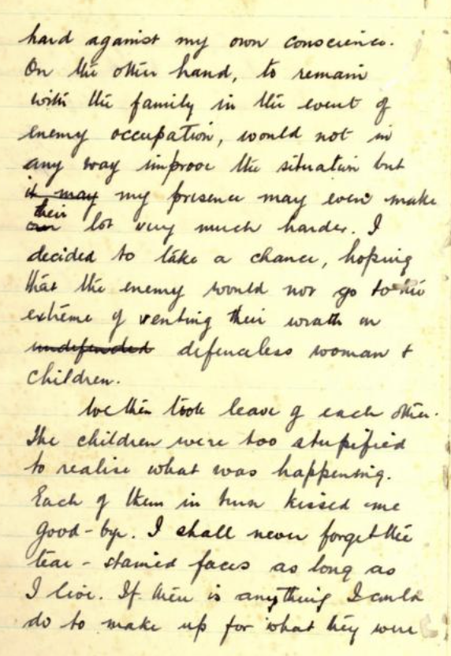
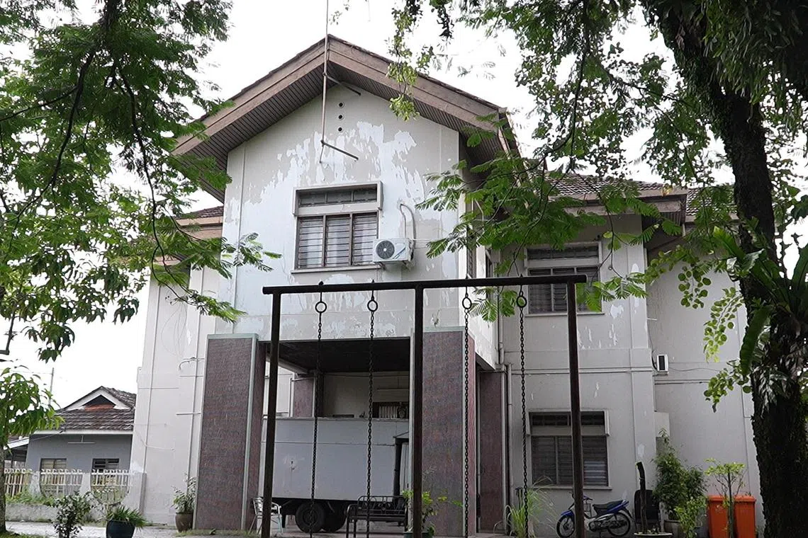
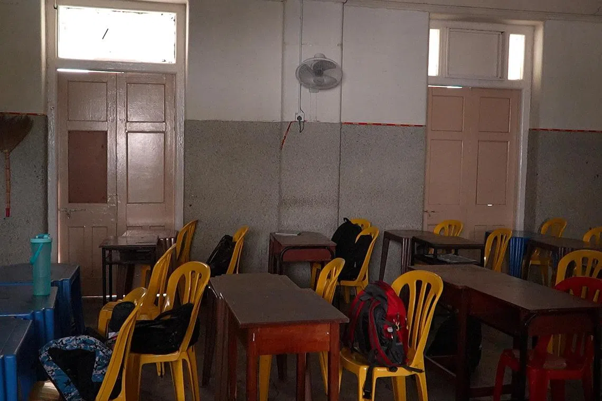
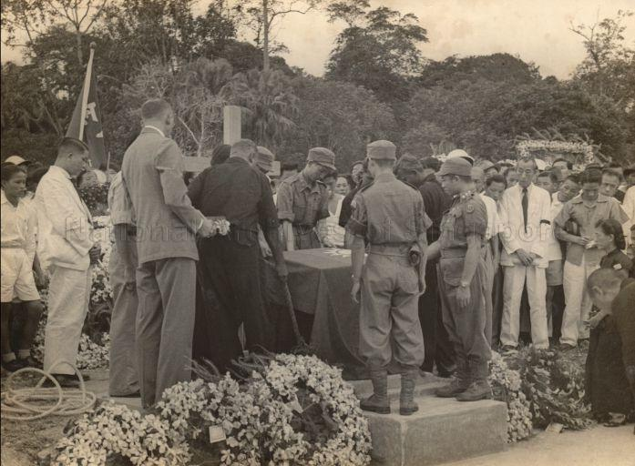

Mr Lim Bo Seng: A Rare Nepo Baby Done Right
27 April 1909–29 June 1944

Mr Lim Bo Seng.. rings a bell? Pretty sure you recognise the white octagonal pagoda at the Esplanade park. That’s the Lim Bo Seng Memorial. A memorial dedicated to the war hero who endured inhumane torture by the Japanese, so that the people in Singapore then, and people like you today, could live the lives we have now.
Imagine the last memory of your children, being their teary-eyed naive faces as they unknowingly bid goodbye to their father for the last time. That was Mr Lim Bo Seng’s last memory and recollection of his children as he walked away to defend his country, and the very family he loved within it.
Lim was a Fujian-born Chinese businessman who led a life that, while privileged, was not especially uncommon among well-educated Straits Chinese of his time. He attended the reputable Raffles Institution and then Anglo-Chinese School, later inheriting multiple family businesses across different industries, marrying, and raising eight children.. Yes, he’s a nepo baby.
Prior to the war in Singapore, Lim was an active volunteer in anti-Japanese activities in the 1930s, donating money to the Chinese Relief Fund and boycotting against Japanese goods. He also organised fundraising activities, and asked people to go on the streets and sell flowers to raise money to send back to China. At one point, his children hardly saw him, as he was always out until quite the wee hours of the night.
Lim knew that the Japanese were after his ass, well aware he was helping the British and supporting China in their anti-Japanese fight. And coupled with the Japanese rapidly closing in on Singapore, he knew he was in imminent danger.
At one point, when the Japanese were acquiring neighbouring countries like Thanos’ infinity stones, Lim was given a chance to leave Singapore with his family, along with places offered for himself and his family to flee Singapore. However, he decided not to go ahead with the offers, as "accommodation was insufficient for everyone and their families."
Japanese forces were sinking evacuating ships, and the situation was only growing grimmer and more desperate, and so he made a hard, yet the bravest decision he could make: keep his family in Singapore, and flee alone without them. He believed this gave stronger chances for his family’s survival. Arguably selfish, some may say.. But that was Lim’s last resort as a father, husband, and a Singaporean.
Lim’s brother was the last to see him before he had left, and during that farewell, his last few words were simple: stay and look after the family. He departed with some peace of mind, believing the British government's promise that his wife and children would soon be evacuated. But as the Japanese advanced far more quickly than expected, that promise never came to fruition.
In Lim’s now-published diary, he penned a sad yet tender reflection of the anguish and sense of duty that defined life in those turbulent times. He expressed his pain at parting from his family and his conscience wrestling between protecting them and serving his nation.
“To leave the dear Mrs behind at the mercy of the enemy would go very hard against my own conscience. On the other hand, to remain with the family in the event of enemy occupation, would not in any way improve the situation but my presence may even make their lot very much harder.”

“I decided to take a chance, hoping that the enemy would not go to the extreme of venting their wrath on defenceless women & children. We then took leave of each other. The children were too stupified (stupefied] to realise what was happening. Each of them in turn kissed me good-bye. I shall never forget the tear-stained faces as long as I live. If there is anything I could do to make up for what they were”
These paragraphs poignantly demonstrate the hopeless and precarious plight that generation had to go through, for adults and innocent kids alike. Some knew that their lives were hanging by the thread by the Japanese, others still too clueless to grasp the situation.. Is ignorance really bliss here? Family, safety, everything was indefinite. And yet, despite all the wrath and guilt Lim went through, he still marched on with hope, something that should have most likely been rare at that point. To think how many others died pitifully clinging onto such a fragile belief then?
Lim took his leave quickly, a few days before the Japanese’s eventual invasion, afraid of prolonging the agony of separation, and made his way through Riau Island and Sumatra and eventually to India and joined Force 136. Think of Force 136 as your secret spy intelligence. Tucked in India behind enemy lines, their mission involved training local guerrillas, organising an underground spy network, and gathering vital intelligence to aid the British's planned liberation of Japanese-occupied Malaya.
Meanwhile, back at home, now renamed Syonan-to, the Japanese were searching high and low for Lim. Barely a few days after the Japanese invaded, 200 soldiers made their way to Lim’s brother’s house and tried to sieve out any information on Lim’s whereabouts.
After months of training in India, Force 136 returned to Malaya. However, this was the start to Force 136’s subsequent downfall. In March 1944, Force 136 had set up an underground network, hiding behind different business fronts.
Yet fate turned against them. Mistaking a Japanese submarine for their own, an agent made a fatal approach. Though he escaped, two of his men were seized and, under pressure, divulged vital intelligence that led to the arrest of several members of Force 136.
Lim was among those captured at the Gopeng checkpoint. He had left the Bukit Bidor camp prior, to secure funds and gather intelligence in Ipoh with the alias of an uncle of a Force 136 agent, hiding out in a two-storey house in Ipoh. Taken with other agents to the Kempeitai headquarter in Ipoh, now replaced with St. Michael’s Institution, Malaysia, he was brutally tortured by the Kempeitai for information.

What’s Kempetai? Feared across Asia, Kempetai were the Japanese military police, who were infamously known for their egregiously inhumane and indiscriminate execution methods, in the name of eradicating anti-Japanese sentiments.
However, Lim saved millions of lives today, as he refused to divulge any information about the Force. Despite his whole physical being deteriorating, he still stood resolute in his resolve to keep mum.
A classroom at St Michael’s Institution, where Lim Bo Seng was subjected to questioning and torture. Following months of unwillingness to cooperate with the Japanese, he was soon transferred to Batu Gajah Prison (or Batu Gajah Gaol) in Perak where he was tortured and starved by the Kempeitai.

During those days, he was at his helpless, weakest and most vulnerable state, and yet Lim was still remembered by fellow prisoners for his kindness that didn’t waver in spite of such circumstances. They shared that he had shared his pathetic portions of food rations with them despite being “reduced to a bag of bones” and even begged the guards to distribute the food meant for him to the rest of the prisoners.
So selfish and benevolent, that his actions in his last few days touched the hearts of the guards too. Eventually, Lim succumbed to his injuries on the 29th of June, 1944, and passed from malnutrition, dysentry and torture at the age of 35. Wrapped in a torn blanket, he was carted away and buried among many others in a mass grave by the prison. His legacy, his contributions, his life, reduced to mere dirt. His soul rested at the grounds of many other humiliated, and innocent victims, buried beside the very grounds of their suffering. Not a single dignity spared to them even in their afterlives.
In Singapore, the Japanese, fueled by vengeance and some unhinged brutality, tracked down and killed eight of Lim’s relatives who were living at 855 Serangoon Road. Lim’s wife, however, managed to evade capture, constantly moving the family between different hideouts and even finding temporary refuge on St John’s Island. Imagine having so much free time that you hunt down a random victim's family when he's just one among thousands killed. Peak unemployment behaviour.
Following the Japanese's surrender, one of Lim's friends came back to Singapore and relayed the piece of news to Lim's brother, "Your brother died in June (19)44 in prison, Perak, Batu Gajah."
In December 1945, Lim’s now-widowed wife, Gan Choo Neo, and their eldest son, Lim Leong Geok, travelled there in search of his mortal remains, which were later repatriated to Singapore, where he was laid to rest. Honouring Lim’s legacy and contributions, a funeral was held at City Hall, after which he was laid to rest with full military honours on a hill overlooking MacRitchie Reservoir, where he held fond memories of his courtship days with his wife. In 1946, the Chinese Nationalist government posthumously promoted him to the rank of major-general.

An entry from Lim’s personal diary left for his heartbroken wife reads: “You must not grieve for me. On the other hand, you should take pride in my sacrifice and devote yourself to the upbringing of the children. Tell them what happened to me and direct them along my footsteps.”
A devoted family man, who held his family close to his heart till the very end, and a patriotic man of conviction who gave his all in protecting our nation. A piece of our history that deserves to transcend through generations to come.
Dear Lim, in your next life, may both sides of your pillow always be cold, you date the prettiest and kindest version of your wife in this life, and live a life where war doesn’t exist.